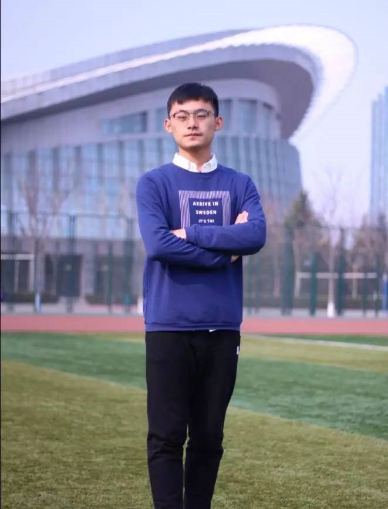
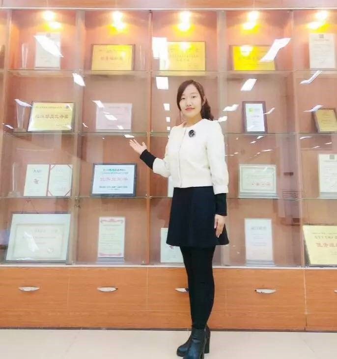
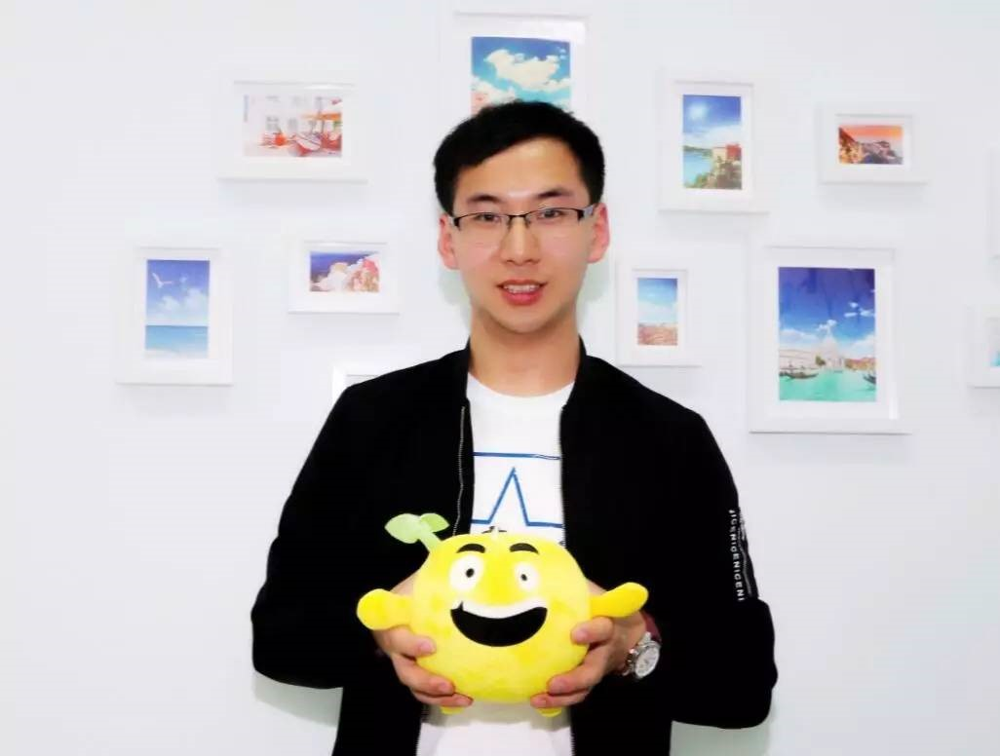
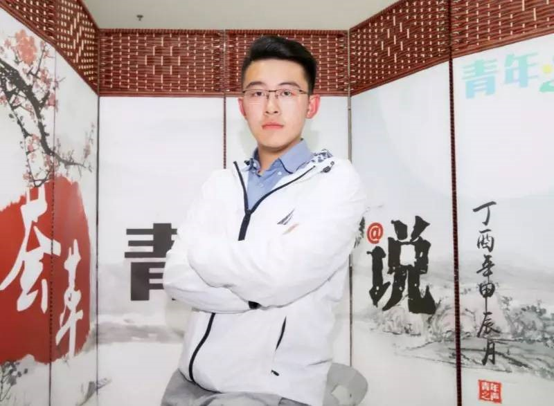
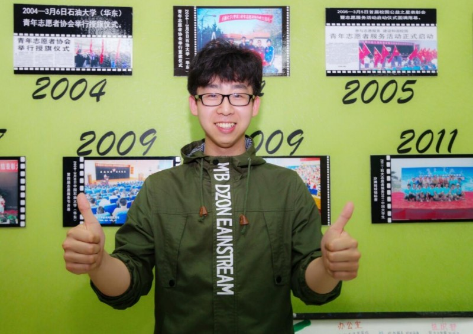
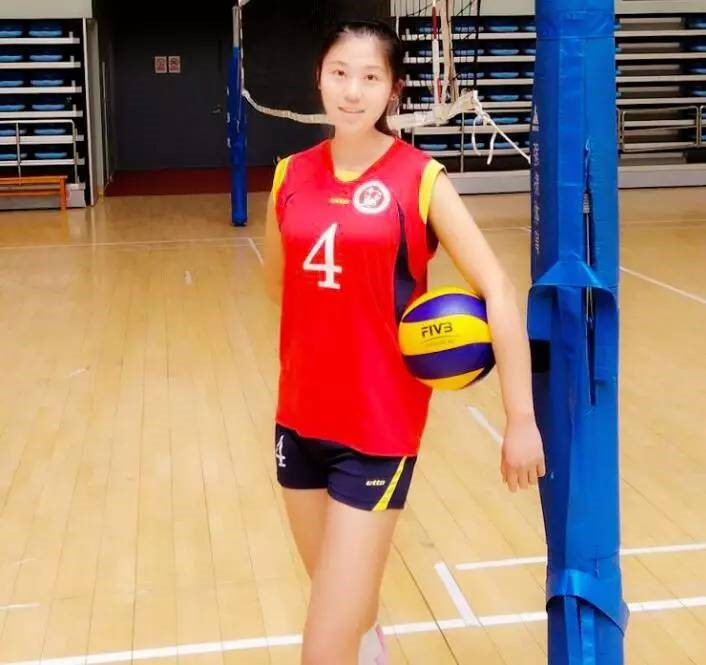
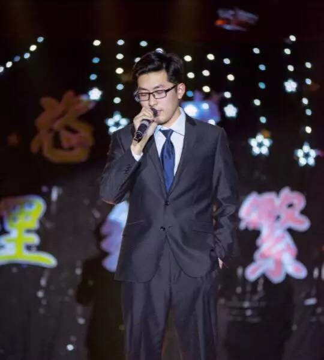
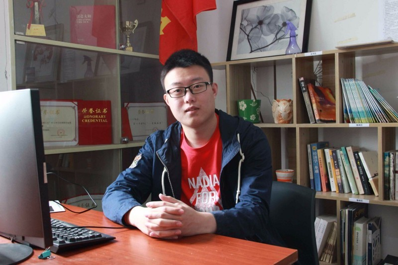
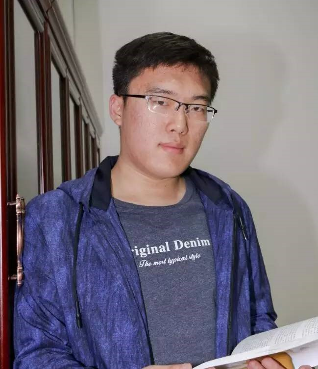

来自信息与控制工程学院，现任大学生记者团副团长，党委宣传部学生助理，学院新闻工作室主编等职务。曾荣获山东省优秀学生，十大学生记者，中央企业社会责任观察员，优秀共青团干部，优秀学生干部等优秀荣誉。校报发稿量13万字，排名第一；作品获中国石油新闻奖一等奖、山东省高校校报好新闻一等奖；记者团位居山东十佳校媒第一名；个人获山东省优秀学生、中国石油奖学金、十大学生记者。

来自经济管理学院，现任大学生科技协会主席，就业指导中心助理，经济管理学院2014级第二党支部组织委员。曾荣获山东省社会实践优秀学生，思美之星，大学生创新创业之星，十大科技创新团队，优秀共青团干部，优秀学生干部，十佳科技社团干部等荣誉。是科技赛事的参与者，更是科创活动的组织者。组织实施第二十五届大学生科技节，联合青岛澳氏企业、海尔创客实验室搭建校企合作交流平台，获评创新创业实践卓越之星成才奖学金、大学生创新创新之星。

来自机电工程学院，现任大学生新媒体中心主任，曾荣获山东省优秀学生干部，山东省社会实践优秀学生，等荣誉，并获得国家励志奖学金。“青春石大”微信号全国第9，“青春石大”微博号全国第4，获评“全国学校共青团新媒体运营中心专业工作室”（全国18个）。团中央学校部舆情引导组实习生。

来自化学与工程学院学院。现任中国石油大学（华东）学生会副主席，曾举办思创论坛、青年健身节、青年之声-荟萃青年说、“笃信、善学、能言、明礼、健行”系列活动，引领青年思想。组织开设失物招领，爱心专车，跳蚤市场等栏目，全心全意服务广大同学。
来自储运与建筑工程学院，现任储运与建筑工程学院学生会主席。曾举办第一届全国油气储运工程大赛，筹办2017亚太国际管道会议，接待校友20余人次，两年累计奖学金一万三千余元，荣获评山东省优秀学生干部，2017亚洲青年领袖“最进取个人”。

来自经济管理学院，现任大学生青年志愿者协会主席，荣获山东省志愿服务先进个人，石油大学公益之星。志愿服务百余次，服务时长800小时，团队获“镜头中的三下乡 好团队奖”、“中国公益慈善项目大赛铜奖”。

来自体育教学部，现任体育教学部学生会秘书长，校团委助理。国家一级排球运动员，国家一级排球裁判员，国家二级篮球裁判员，十佳团员标兵，思美之星，体育之星，优秀共青团干部，优秀学生干部，优秀志愿者。曾获第十一届全国大学生沙滩排球锦标赛高水平组第一名，2014-2015年全国大学生排球联赛（北方赛区）c组第一名。

来自理学院，现任理学院学生会主席。曾获山东省优秀学生干部，校优秀学生干部，校优秀学生，校年度优秀社团干部等荣誉，获得胜利成才奖学金，学习优秀奖学金，组织能力奖学金等。扎根学生会，推进部门改革，举办活动百余场，首创十余项学生活动，获评月度十佳精品活动17项

来自储运与建筑工程学院，现任大学生社团联合会主席。曾获山东省暑期社会实践优秀学生，中国石油大学（华东）社团之星。个人获评学习奖学金，优秀学生干部等荣誉30余项。组织社团文化节、智力运动会等大型品牌活动十余场，学生社团活动百余场；孔子学堂获评“全国高校优秀学堂”（全国10个）；学生社团累计荣获省级及以上奖项和荣誉20余项。

来自计算机与通信工程学院，现任山东省志愿者协会理事，校研究生会副主席。曾获中华慈善总会“优秀志愿者”、中华慈善总会优秀志愿者、山东省志愿工作先进个人、山东省志愿服务先进个人，获得胜利成才奖学金、数学建模全国二等奖、“挑战杯”全国三等奖 。立足学术工作，主办“博萃节”“学术年会”“科学精神与学风建设月”等学术活动。